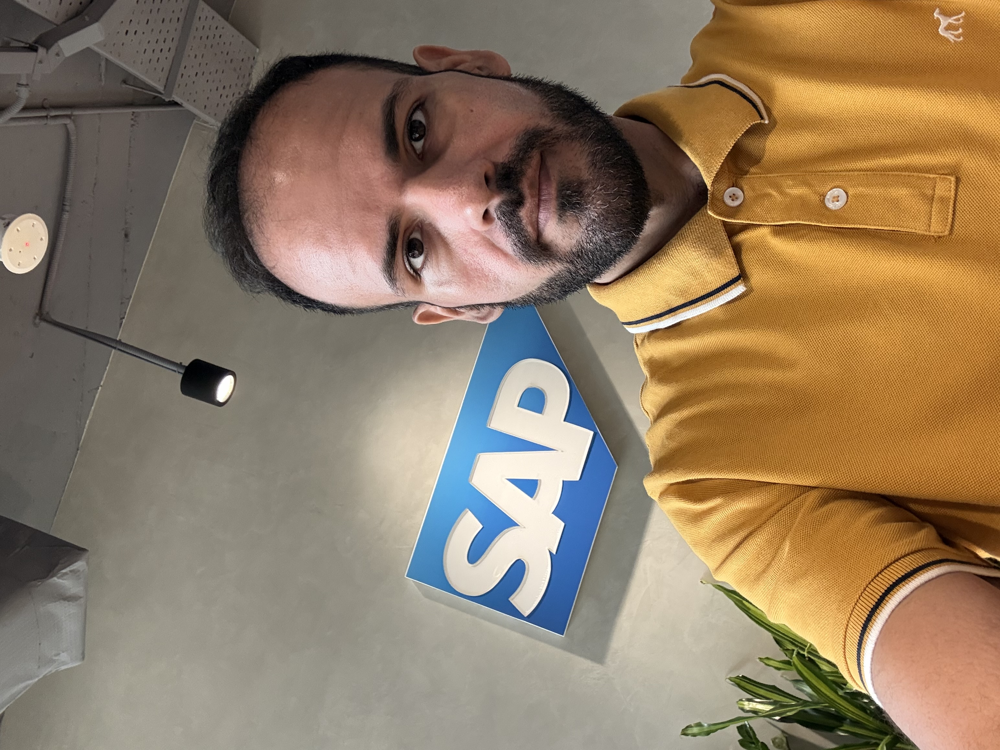
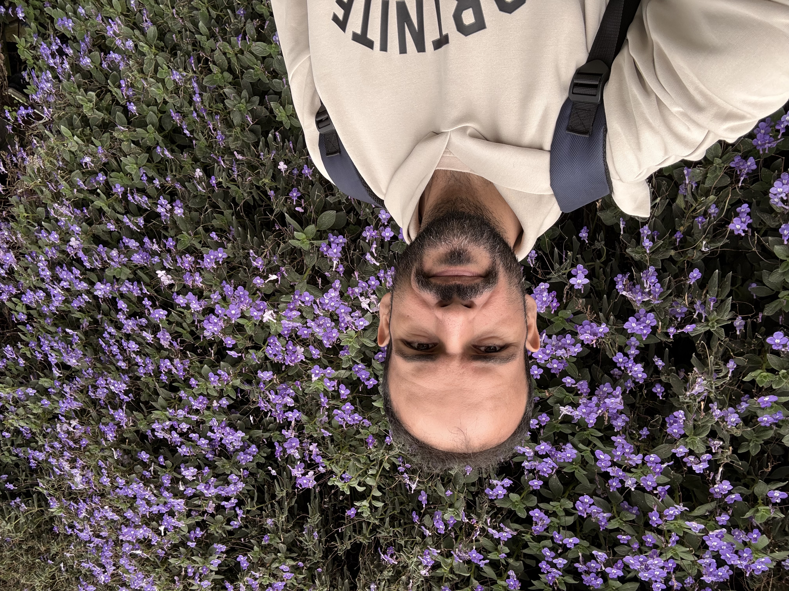
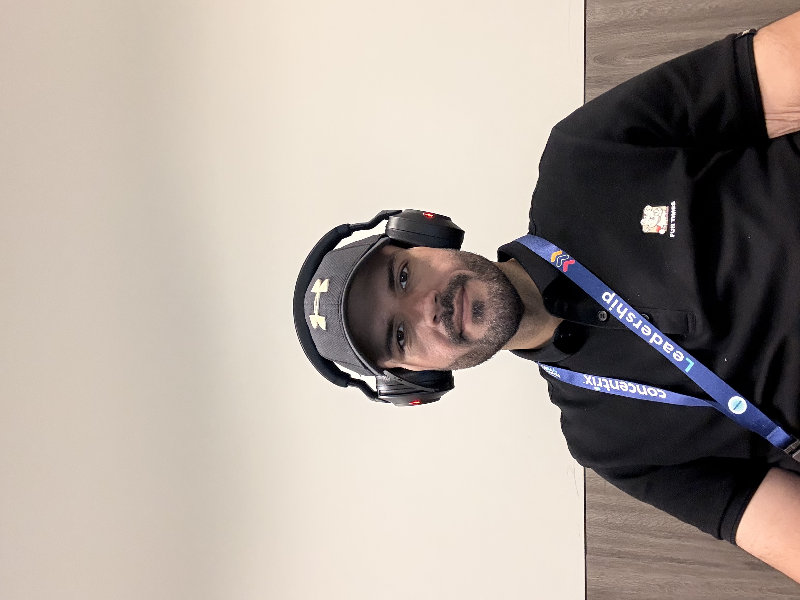

Hello, I am
Bahman Noushabadi
Tech Leader & Developer
Bridging the Gap Between Operational Excellence and Technical Innovation.
Explore My WorkAbout Me




Originally from Iran and currently based in Kuala Lumpur, I am a tech leader and developer with a deep passion for solving complex enterprise challenges. With a Bachelor's in Computer Science and a Master's in Software Engineering, my career has been built at the intersection of hands-on software development and strategic B2B SaaS operations.
Building for the Web
Beyond managing global customer success teams, I am a builder at heart. I specialize in web development and content management, utilizing a robust technical stack that includes HTML, CSS, JavaScript, Node.js, and Java. Whether I am architecting scalable backend solutions with Node and Java, managing dynamic content systems, or crafting intuitive, responsive frontend interfaces, I focus on writing clean, efficient code that enhances the user experience.
Scaling Enterprise Solutions
Over the last decade, I have led cross-functional teams and driven digital transformation within the global SAP ecosystem. By leveraging process automation tools like SAP iRPA and Power Automate, I have a proven track record of eliminating manual workflows, accelerating SLA resolutions, and boosting customer satisfaction. My technical background allows me to go beyond surface-level management—such as when I collaborated to develop and implement the first-ever Chatbot for the SAP Store—ensuring that every operational strategy is backed by a solid technical foundation.
Fluent in English and Farsi, I thrive in diverse environments where I can wear multiple hats: from a developer deep in the codebase to a Customer Success strategist presenting ROI to executive stakeholders. I am always looking for the next opportunity to build, optimize, and grow.
Core Competencies
Operations Management
Cross-functional Leadership, KPI/SLA Attainment, MBR/QBR Reporting.
Digital Transformation
Process Automation, Workflow Optimization, Quality Auditing.
Client Relations
Global Stakeholder Management, B2B Account Support, Service Delivery Excellence.
Technical Proficiency
SAP S/4HANA, SAP ERP, SAP Build, SAP BTP, Power BI, SAP SAC, Adobe AEM, HTML, CSS, JS, Node.js, Java.
Professional Experience
Associate Manager (SAP Project)
Concentrix Malaysia
2022 – Present- Cross-Functional Leadership: Direct and mentor 4 specialized teams comprising 40+ agents across APJ and EMEA regions.
- Process Automation: Spearheaded the development of 20 custom automation workflows using SAP iRPA and Power Automate; reduced repetitive task efforts by 50%.
- Service Quality: Enhanced process accuracy by eliminating human error through automation, leading to an average 20% increase in CSAT scores.
- Team Incubation: Launched the Digital Automation and Digital Design teams from inception.
- Operational Excellence: Maintained an unblemished 100% KPI achievement rate across all 4 teams for 4+ consecutive years.
- Stakeholder Engagement: Prepare and present sophisticated MBR/QBR to Concentrix executive management and global SAP clients.
- Strategic Migration: Successfully integrated the Web Operations team into the core SAP business unit.
Team Lead (SAP Store, APJ)
Concentrix Malaysia
2020 – 2022- Performance Management: Directed daily operations for the APJ Store Support team.
- KPI Attainment: Led the team to achieve 100% of all quarterly KPIs for 8 consecutive quarters (2 years) without a single missed target.
- Talent Development: Conducted regular coaching and feedback sessions, identifying operational weaknesses and implementing targeted improvement plans.
Senior E-commerce Specialist (SAP Store)
Concentrix Malaysia
2016 – 2020- B2B Client Support: Managed complex pre- and post-order inquiries for SAP Store customers, resolving up to 30 cases daily with high accuracy.
- AI & Chatbot Innovation: Played a critical role in developing and implementing the first-ever Chatbot for the SAP Store in 2018.
- Award & Recognition: Recognized as "Most Valuable Agent of the Year" for outstanding performance.